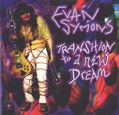

| Artist: | Evan Symons |
| Title: | Transition To A New Dream |
| Label: | Step And A Half Multimedia |
| Length(s): | 31 minutes |
| Year(s) of release: | 1998 |
| Month of review: | [07/2001] |
| 1) | The Way Things Are | 2.56 |
| 2) | Brain Interface | 3.16 |
| 3) | Renewal | 4.22 |
| 4) | Tied (one More Day) | 5.30 |
| 5) | Not Sure | 3.15 |
| 6) | Focus | 4.05 |
| 7) | Goddess Of The Moon | 5.04 |
| 8) | Dream Operator | 2.41 |
Anyway, a few words about the music then: Symons has a somewhat vague but pleasant voice. His intonation is rather flexible going from high to low in weird places making the vocals sound strange, a bit as if the vocalist is surprised to find himself singing at all.
The music is not prog, though it may have some aspects of it. The first track has some Latin influences, although for the most part it is, like the other tracks, a wayward kind of singersongwriter. Homemade and that respect very similar to Rick Ray, musically however they do not come so close. The music of Symons has better percussion and is more varied melodically and is less focused on riffs and solos, more on songwriting. The music does sound bare, and this is not surprising, because most of it is homerecording. For that the sound is actually quite clear.
The songs then: The Way Things Are has a nice melody and is mostly acoustic stuff, Brain Interface is percussive and has a rather adverse part on keyboards. One could call this proggy. Renewal is laid back and similar to the first track. Tied (One More Day) is probably the best track with its continuous sounds of breaking glass, nice chords in the beginning and a Floydian feel (I was also reminded of Obscured By Clouds). Not Sure has a combination of electrified country, flamenco and a strumming acoustic guitar. Focus is a boring track, too much repetition, and is the track with the clarinet. Goddess Of The Moon has a strong guitar solo and the short album closes with rock riffs in Dream Operator.